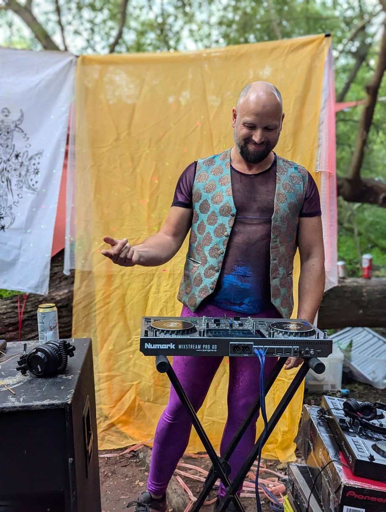
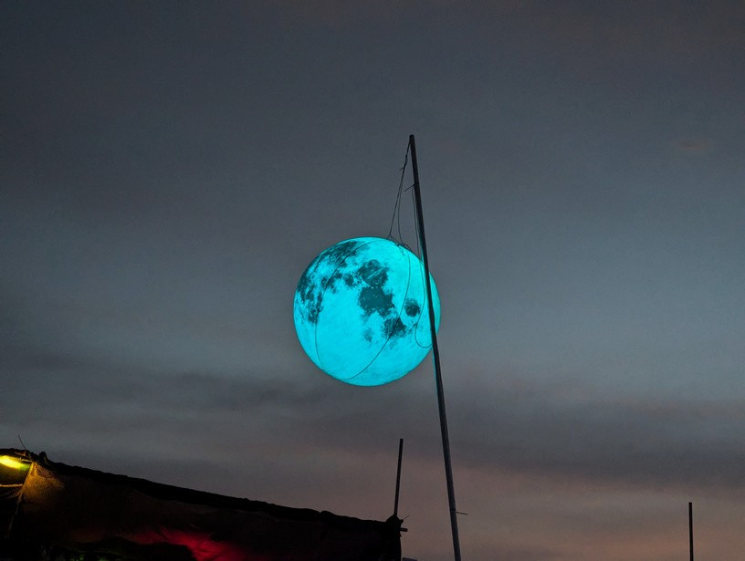

MOOWS / Issue 01 · August 2026
Burning with the herd

On this special occasion of the first cowzine publication coinciding with the arrival of our new calf, I wanted to reflect and write a little ode to ardent burning.
At the latest MCF, in a conversational attempt to illustrate my very slow and vocal conscious transition into this new phase of my life, an image popped up in my head of a fire pit and the logs fuelling the fire. Not much imagination was required - a real one was burning nearby.
Over 3 years ago having planned to try for children a few years later, I decided to throw myself into the Mooncow fire pit and applied for a Nowhere grant for the Moonbull. One thing led to another and Heddie and I temporarily became central logs of the Mooncow fire; and with others, became the primary fuel to a lot of the Mooncows burn activity.
Knowing that there would be an end to that phase once the baby would arrive allowed me to wholeheartedly throw myself into the community fire and I got to see a lot of my little dreams and visions come to fruition.
In this next phase of my life, I will remain in the firepit but see myself more as a thinner burnt log underneath or on the side, red with amber and white with ash. A supporting log, still contributing to the fire but not intensely fuelling the fire as central logs do.
I have grown to particularly like this image of the situation as I feel it also aptly illustrates other aspects of the Mooncows Burn philosophy that I hold dear.
The idea of logs carries for me an unapologetic nature to bringing your energy to the fire. All logs differ in shape, composition, size and will burn differently; throwing yourself in that fire will influence the way it burns and behaves for a while. Let none be afraid to alter things, throw your log in and see that vision that you hold dear come to reality in the heat of the communal fire.
As all of efforts in burns are gifts, I believe cows should stay true to that crazy idea they dreamt up on that probably non sober day. The herd is and will always be particularly grateful to those who fuel the fire.
The fire analogy also illustrates the ephemerence of it all, the way that fire burns is unique to the energy of the combusting logs at the time. Those logs will live their course and new logs will be added to supplement the fire.
Similarly the cows coming and going around the flames, enjoying themselves and one another, laughing, chewing the cud, scheming and communing are absolutely essential to the fire. They are the raison d'être of of that fire, if not for them it would probably just be some type of arson.
I have no doubt in the future, some funky dreams and ideas will excite and compel me to throw my (half burnt) log back in the middle but in the meantime...
Let that fire BURN.
